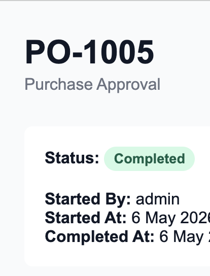

About
I design and ship software built for real operational environments — systems that are reliable under load, observable in production, and safe to evolve over time.
My work focuses on backend engineering, distributed systems, platform architecture, and production-grade APIs with a strong emphasis on reliability, maintainability and operational clarity.
Featured Projects

OpsFlow
Workflow approval engine for internal operations, with ordered approval steps, decision history, actor-based permissions, and Django Admin tooling.
Stack: Django, SQLite, Django Admin, Service Layer, Django Tests
View Repository →CartScale
Production-style shopping cart and checkout system focused on concurrency, idempotency, stock reservation, and safe state transitions.
Stack: Django, PostgreSQL, Redis, Celery, DRF, Docker
View Repository →ML Observable Prediction Platform
Architecture-first ML platform exploring drift monitoring, safe rollout, and observable inference for production systems.
Stack: Python, FastAPI, PostgreSQL, Docker, Prometheus, Grafana
View Repository →Engineering Focus
Backend Systems
Designing scalable APIs, transactional workflows, and operational platforms built for production reliability.
Distributed Architecture
Building systems around async processing, state consistency, observability, and safe concurrency.
Operational Engineering
Creating software that remains maintainable, diagnosable, and resilient under real operational load.
Platform Reliability
Focusing on auditability, monitoring, fault tolerance, and long-term system evolution.
Contact
If you'd like to talk about engineering, systems, or opportunities, feel free to reach out.